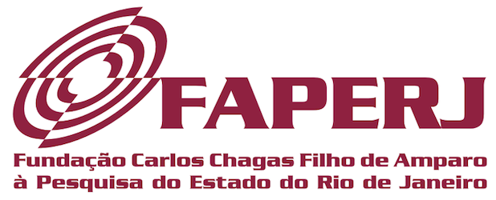

Destaques
Egressos de Destaque
Ana Paula Antunes Ferreira, DSc
Presidente, Osteopathic International Alliance (2021-2022)
Fontes: Osteopathic International Alliance
Carla Porto Loreunço, DSc
Membro Titular, Comissão da Câmara Técnica em Fisioterapia Vestibular do Conselho Regional de Fisioterapia e Terapia Ocupacional da 2ª Região (2020)
Fontes: Crefito-2
Gabriel Parisotto, MSc
Coordenador, Associação Brasileira de Fisioterapia Cardiorrespiratória e Fisioterapia em Terapia Intensiva, Núcleo Roraima (2022)
Fontes: ASSOBRAFIR
Produções de destaque
Atenção e visibilidade1,2,3 (Top-20)
Produtos (n = 20) e Impactos (Altmetric1, Dimensions2, PlumX3, CiteScore4, SJR5, Qualis6, Open Access7)
| Produtos (n = 20) e Impactos (Altmetric1, Dimensions2, PlumX3, CiteScore4, SJR5, Qualis6, Open Access7) |
|---|
|
Text neck and neck pain in 18–21-year-old young adults Gerson Moreira Damasceno, Arthur Sá Ferreira, Leandro Alberto Calazans Nogueira, Felipe José Jandre Reis, Igor Caio Santana Andrade, Ney Meziat-Filho 2018 - European Spine Journal |
|
Association Between Text Neck and Neck Pain in Adults Igor Macedo Tavares Correia, Arthur de Sá Ferreira, Jessica Fernandez, Felipe José Jandre Reis, Leandro Alberto Calazans Nogueira, Ney Meziat-Filho 2020 - Spine |
|
Structural and functional connectivity changes in response to short-term neurofeedback training with motor imagery T. Marins, E.C. Rodrigues, T. Bortolini, Bruno Melo, J. Moll, F. Tovar-Moll 2019 - NeuroImage |
|
Fernanda Tovar-Moll, Myriam Monteiro, Juliana Andrade, Ivanei E. Bramati, Rodrigo Vianna-Barbosa, Theo Marins, Erika Rodrigues, Natalia Dantas, Timothy E. J. Behrens, Ricardo de Oliveira-Souza, Jorge Moll, Roberto Lent 2014 - Proceedings of the National Academy of Sciences of the United States of America |
|
High-velocity, low-amplitude manipulation (HVLA) does not alter three-dimensional position of sacroiliac joint in healthy men: A quasi-experimental study Danielle de Faria Alvim de Toledo, Frederico Barreto Kochem, Julio Guilherme Silva 2020 - Journal of Bodywork & Movement Therapies |
|
Ivanei E. Bramati, Erika C. Rodrigues, Elington L. Simões, Bruno Melo, Sebastian Höfle, Jorge Moll, Roberto Lent, Fernanda Tovar-Moll 2019 - Scientific Reports |
|
Cognitive functional therapy compared with core exercise and manual therapy in patients with chronic low back pain: randomised controlled trial Julia Castro, Luis Correia, Bruno de Sousa Donato, Bruno Arruda, Felipe Agulhari, Marina J. Pellegrini, Fabiana T.C. Belache, Cíntia P. de Souza, Jessica Fernandez, Leandro A.C. Nogueira, Felipe J.J. Reis, Arthur de Sá Ferreira, Ney Meziat-Filho 2022 - Pain (03043959) |
|
Igor da Silva Bonfim, Leticia Amaral Corrêa, Leandro Alberto Calazans Nogueira, Ney Meziat-Filho, Felipe José Jandre Reis, Renato Santos de Almeida 2021 - Brazilian Journal of Physical Therapy |
|
Kennedy Cristian Alves de Sousa, Damara Guedes Gardel, Agnaldo José Lopes 2022 - Physiotherapy Research International |
|
Bruno Ferreira Viana, Gabriel S. Trajano, Carlos Ugrinowitsch, Flávio Oliveira Pires 2020 - PLOS ONE |
|
Leticia Amaral Corrêa, Stephanie Mathieson, Ney Armando de Mello Meziat-Filho, Felipe José Reis, Arthur de Sá Ferreira, Leandro Alberto Calazans Nogueira 2022 - Brazilian Journal of Physical Therapy |
|
Paulo Franco-Alvarenga, Cayque Brietzke, Raul Canestri, Márcio Goethel, Bruno Viana, Flávio Pires 2019 - Nutrients |
|
Juliana Valentim Bittencourt, Ana Carolina de Melo Magalhães Amaral, Pedro Vidinha Rodrigues, Leticia Amaral Corrêa, Bruno Moreira Silva, Felipe José Jandre Reis, Leandro Alberto Calazans Nogueira 2021 - Archives of Physiotherapy |
|
Lívia de Oliveira Lima, Bruno T Saragiotto, Leonardo Oliveira Pena Costa, Leandro Calazans Nogueira, Ney Meziat-Filho, Felipe J J Reis 2021 - Physical Therapy |
|
Tatiana Conceição Pereira de Oliveira, Damara Guedes Gardel, Angelo Thomaz Abalada Ghetti, Agnaldo José Lopes 2022 - Clinical Biomechanics |
|
“Text-neck”: an epidemic of the modern era of cell phones? Ney Meziat-Filho, Arthur Sá Ferreira, Leandro Alberto Calazans Nogueira, Felipe José Jandre Reis 2018 - Spine Journal |
|
Raiany Pires Santos, Thamires Prazeres Alonso, Igor Macedo Tavares Correia, Leandro Calazans Nogueira, Ney Meziat-Filho, Felipe J.J. Reis 2022 - Brazilian Journal of Physical Therapy |
|
Fabiana Terra Cunha Belache, Cíntia Pereira de Souza, Jessica Fernandez, Julia Castro, Paula dos Santos Ferreira, Elizana Rodrigues de Sousa Rosa, Nathalia Cristina Gimenez de Araújo, Felipe José Jandre Reis, Renato Santos de Almeida, Leandro Alberto Calazans Nogueira, Luís Cláudio Lemos Correia, Ney Meziat-Filho 2018 - Journal of Physiotherapy (Australian Physiotherapy Association) |
|
Choosing Wisely Brazil: top 5 low-value practices that should be avoided in musculoskeletal physical therapy F.J.J. Reis, N. Meziat-Filho, R.J. Soares, L.C.L. Correia 2021 - Physiotherapy / Fizjoterapia |
|
Chronic low back pain and back muscle activity during functional tasks Maicom Lima, Arthur Sá Ferreira, Felipe José Jandre Reis, Vanessa Paes, Ney Meziat-Filho 2018 - Gait & Posture |
Fontes:1 Altmetric,
2 Dimensions,
3 PlumX,
4 CiteScore,
5 SCImago,
6 WebQualis,
7 DOAJ
Início
⬆️
Prestígio do periódico4,5 (Top-20)
Produtos (n = 20) e Impactos (Altmetric1, Dimensions2, PlumX3, CiteScore4, SJR5, Qualis6, Open Access7)
| Produtos (n = 20) e Impactos (Altmetric1, Dimensions2, PlumX3, CiteScore4, SJR5, Qualis6, Open Access7) |
|---|
|
Fernanda Tovar-Moll, Myriam Monteiro, Juliana Andrade, Ivanei E. Bramati, Rodrigo Vianna-Barbosa, Theo Marins, Erika Rodrigues, Natalia Dantas, Timothy E. J. Behrens, Ricardo de Oliveira-Souza, Jorge Moll, Roberto Lent 2014 - Proceedings of the National Academy of Sciences of the United States of America |
|
Structural and functional connectivity changes in response to short-term neurofeedback training with motor imagery T. Marins, E.C. Rodrigues, T. Bortolini, Bruno Melo, J. Moll, F. Tovar-Moll 2019 - NeuroImage |
|
Cognitive functional therapy compared with core exercise and manual therapy in patients with chronic low back pain: randomised controlled trial Julia Castro, Luis Correia, Bruno de Sousa Donato, Bruno Arruda, Felipe Agulhari, Marina J. Pellegrini, Fabiana T.C. Belache, Cíntia P. de Souza, Jessica Fernandez, Leandro A.C. Nogueira, Felipe J.J. Reis, Arthur de Sá Ferreira, Ney Meziat-Filho 2022 - Pain (03043959) |
|
Tatiana Rafaela Lemos Lima, Vívian Pinto Almeida, Arthur Sá Ferreira, Fernando Silva Guimarães, Agnaldo José Lopes 2019 - Aging & Disease |
|
Single-Nucleotide-Polymorphism-Panel Population-Genetics Approach Based on the 1000 Genomes Database and Elite Soccer Players Gustavo Monnerat, Alex S. Maior, Marcio Tannure, Lia K.F.C. Back, Caleb G.M. Santos 2019 - International Journal of Sports Physiology and Performance |
|
“Text-neck”: an epidemic of the modern era of cell phones? Ney Meziat-Filho, Arthur Sá Ferreira, Leandro Alberto Calazans Nogueira, Felipe José Jandre Reis 2018 - Spine Journal |
|
Effect of continuous and intermittent bouts of isocaloric cycling and running exercise on excess postexercise oxygen consumption Felipe A. Cunha, Adrian W. Midgley, Lars R. McNaughton, Paulo T.V. Farinatti 2016 - Journal of Science and Medicine in Sport |
|
Influence of Different Treadmill Inclinations on V̇o 2max and Ventilatory Thresholds During Maximal Ramp Protocols Sidney C. Silva, Walace D. Monteiro, Felipe A. Cunha, Paulo Farinatti 2021 - Journal of Strength & Conditioning Research |
|
Acute Hormone Responses Subsequent to Agonist-Antagonist Paired Set vs. Traditional Straight Set Resistance Training Humberto Miranda, João Antônio A.A. de Souza, Estevão Scudese, Gabriel A. Paz, Verônica P. Salerno, Patrícia dos Santos Vigário, Jeffrey M. Willardson 2020 - Journal of Strength & Conditioning Research |
|
Acute Effect of Aerobic and Strength Exercise on Heart Rate Variability and Baroreflex Sensitivity in Men With Autonomic Dysfunction Tainah de Paula, Mario F. Neves, Alex da Silva Itaborahy, Walace Monteiro, Paulo Farinatti, Felipe A. Cunha 2019 - Journal of Strength & Conditioning Research |
|
Giovanna C. Guimarães, Paulo T.V. Farinatti, Adrian W. Midgley, Fabrício Vasconcellos, Patrícia Vigário, Felipe A. Cunha 2019 - Journal of Strength & Conditioning Research |
|
Guilherme F. Fonseca, Paulo T.V. Farinatti, Adrian W. Midgley, Arthur Ferreira, Tainah de Paula, Walace D. Monteiro, Felipe A. Cunha 2018 - Journal of Strength & Conditioning Research |
|
Influence of Acute Concurrent Exercise Performed in Public Fitness Facilities on Ambulatory Blood Pressure Among Older Adults in Rio de Janeiro City Ricardo Cordeiro, Walace Monteiro, Felipe Cunha, Linda S. Pescatello, Paulo Farinatti 2018 - Journal of Strength & Conditioning Research |
|
Eduardo Lattari, Maria L. Andrade, Alberto S. Filho, Antônio M. Moura, Geraldo M. Neto, Júlio G. Silva, Nuno B. Rocha, Ti-Fei Yuan, Oscar Arias-Carrión, Sérgio Machado 2016 - Journal of Strength & Conditioning Research |
|
Ischemic Preconditioning and Placebo Intervention Improves Resistance Exercise Performance Moacir Marocolo, Jeffrey M. Willardson, Isabela C. Marocolo, Gustavo Ribeiro da Mota, Roberto Simão, Alex S. Maior 2016 - Journal of Strength & Conditioning Research |
|
Influence of Blood Flow Restriction During Low-Intensity Resistance Exercise on the Postexercise Hypotensive Response Alex S. Maior, Roberto Simão, Michael S.R. Martins, Belmiro F. de Salles, Jeffrey M. Willardson 2015 - Journal of Strength & Conditioning Research |
|
One Session of Spinal Manipulation Improves the Cardiac Autonomic Control in Patients with Musculoskeletal Pain Pedro Teixeira Vidinha Rodrigues, Leticia Amaral Corrêa, Felipe José Jandre Reis, Ney Armando Meziat-Filho, Bruno Moreira Silva, Leandro Alberto Calazans Nogueira 2021 - Spine |
|
Gabriel Farhat, Felipe José Jandre Reis, Ney Meziat-Filho 2021 - Spine |
|
Association Between Low Back Pain and Biomedical Beliefs in Academics of Physiotherapy Aline Souza Gomes, Arthur de Sá Ferreira, Felipe José Jandre Reis, Fabianna Resende de Jesus-Moraleida, Leandro Alberto Calazans Nogueira, Ney Meziat-Filho 2020 - Spine |
|
Association Between Text Neck and Neck Pain in Adults Igor Macedo Tavares Correia, Arthur de Sá Ferreira, Jessica Fernandez, Felipe José Jandre Reis, Leandro Alberto Calazans Nogueira, Ney Meziat-Filho 2020 - Spine |
Fontes:1 Altmetric,
2 Dimensions,
3 PlumX,
4 CiteScore,
5 SCImago,
6 WebQualis,
7 DOAJ
Início
⬆️
Prêmios
2022
| Documento | Abrir |
|---|---|
| Certificamos que o trabalho “EFEITOS DA UTILIZAÇÃO DO APRV EM PROTOCOLO TCAV COMO ESTRATÉGIA DE RESGATE DA HIPOXEMIA REFRATÁRIA GRAVE EM PACIENTES SDRA POR EVOLUÇÃO DA COVID-19” dos autores: Jeana Carla da Silva Borges; João Paulo Arruda de Oliveira; Sergio Nogueira Nemer; Clara Pinto Diniz; Agnaldo José Lopes; Luis Felipe da Fonseca Reis, foi premiado em 1o LUGAR na área “FISIOTERAPIA EM TERAPIA INTENSIVA – ADULTO”, na categoria “PÔSTER MODERADO”, no XX SIMPÓSIO INTERNACIONAL DE FISIOTERAPIA CARDIORRESPIRATÓRIA E FISIOTERAPIA EM TERAPIA INTENSIVA (XX SIFR), realizado no período de 27 a 30 de abril de 2022, no Centro Sul – Florianópolis/SC | ↗️ |
| Certificamos que o trabalho FATORES ASSOCIADOS A MORTALIDADE EM PACIENTES VENTILADOS MECANICAMENTE COM SÍNDROME RESPIRATÓRIA AGUDA GRAVE POR EVOLUÇÃO DA COVID-19 EM UMA COORTE MULTICÊNTRICA RETROSPECTIVA de autoria de JOÃO PAULO ARRUDA DE OLIVEIRA; CLARA PINTO DINIZ; ANDREIA CRISTINA TRAVASSOS DA COSTA; AGNALDO JOSÉ LOPES; ARTHUR DE SÁ FERREIRA; LUIS FELIPE DA FONSECA REIS foi apresentado como PRÊMIO FISIOTERAPIA NA COVID-19 (PCOV) durante do XX SIMPÓSIO INTERNACIONAL DE FISIOTERAPIA CARDIORRESPIRATÓRIA E FISIOTERAPIA EM TERAPIA INTENSIVA (XX SIFR 2022), realizado no período de 28 a 30 de abril de 2022, no Centro Sul – Florianópolis/SC. | ↗️ |
2021
| Documento | Abrir |
|---|---|
| Certificamos que SAMANTHA GOMES DE ALEGRIA, participou do “1o CONGRESSO ONLINE INTERNACIONAL DE FISIOTERAPIA MÚSCULOESQUELÉTICA”, de 17 a 18 de Abril de 2021, realizado pelo “Grupo Acolher e Cuidar”, com carga horária de 180 horas | ↗️ |
| Certificamos que JULIANA VALENTIM BITTENCOURT, participou do “1o CONGRESSO ONLINE INTERNACIONAL DE FISIOTERAPIA MÚSCULOESQUELÉTICA”, de 17 a 18 de Abril de 2021, realizado pelo “Grupo Acolher e Cuidar”, com carga horária de 180 horas. | ↗️ |
| A Direção de Pesquisa, Inovação e Extensão tem a honra de certificar o artigo intitulado “PREDICTIVE MODELS FOR THE SIX-MINUTE WALK TEST CONSIDERING THE WALKING COURSE AND PHYSICAL ACTIVITY LEVEL”, com os autores Vívian Pinto de Almeida, Arthur de Sá Ferreira, Fernando Silva Guimarães, Jannis Papathanasiou, Agnaldo José Lopes, como vencedores do Prêmio do Programa de Pós-graduação em Ciências da Reabilitação de Melhor Artigo (período 2017-2020) na Linha de Pesquisa Avaliação Funcional em Reabilitação, sob a orientação do Prof. Dr. Agnaldo José Lopes, em 15/07/2021. | ↗️ |
| A Direção de Pesquisa, Inovação e Extensão tem a honra de certificar o artigo intitulado “TRIAL PROTOCOL: COGNITIVE FUNCTIONAL THERAPY COMPARED WITH COMBINED MANUAL THERAPY AND MOTOR CONTROL EXERCISE FOR PEOPLE WITH NON-SPECIFIC CHRONIC LOW BACK PAIN: PROTOCOL FOR A RANDOMISED, CONTROLLED TRIAL”, com os autores Fabiana Terra Cunha Belache, Cíntia Pereira de Souza, Jessica Fernandez, Julia Castro, Paula Dos Santos Ferreira, Elizana Rodrigues de Sousa Rosa, Nathalia Cristina Gimenez de Araújo, Felipe José Jandre Reis, Renato Santos de Almeida, Leandro Alberto Calazans Nogueira, Luís Cláudio Lemos Correia e Ney Armando de Mello Meziat Filho, como vencedores do Prêmio do Programa de Pós-graduação em Ciências da Reabilitação de Melhor Artigo (período 2017-2020) na Linha de Pesquisa Abordagem Terapêutica em Reabilitação, sob a orientação do Prof. Dr. Ney Armando de Mello Meziat Filho, em 15/07/2021. | ↗️ |
| A Direção de Pesquisa, Inovação e Extensão tem a honra de certificar o artigo intitulado “SEATED LIMITS-OF-STABILITY OF ATHLETES WITH DISABILITIES WITH REGARD TO COMPETITIVE LEVELS AND SPORT CLASSIFICATION”, com os autores Paula Britto Rodrigues Santos, Patrícia dos Santos Vigário, Miriam Raquel Meira Mainenti, Arthur de Sá Ferreira, Thiago Lemos de Carvalho, como vencedores do Prêmio do Programa de Pós-graduação em Ciências da Reabilitação de Melhor Artigo (período 2017-2020) na Linha de Pesquisa Reabilitação no Esporte e no Esporte Adaptado, sob a orientação do Prof. Dr. Thiago Lemos de Carvalho, em 15/07/2021. | ↗️ |
| CERTIFICADO DE MENÇÃO HONROSA para o trabalho: Gait initiation in patients with plantar heel pain: a matched case-control study de autoria de LETICIA AMARAL CORRÊA, THIAGO LEMOS, BRUNO DOS SANTOS, LUCIANO SANTOS, ARTHUR DE SÁ FERREIRA, LEANDRO ALBERTO CALAZANS NOGUEIRA que foi classificado em 1o lugar Modalidade E-PÔSTER na área:Fisioterapia Traumato-Ortopédica, Fisioterapia Esportiva e Fisioterapia em Osteopatia no XXIII Congresso Brasileiro de Fisioterapia realizado de 29 a 31 de março de 2021 - Edição on-line. | ↗️ |
| CERTIFICADO DE MENÇÃO HONROSA para o trabalho: Efeito de uma sessão de estimulação transcraniana por corrente continua sobre a iniciação da marcha de indivíduos com Parkison de autoria de CARLOS HENRIQUE RAMOS HORSCZARUK, Thiago Lemos, Débora Cristina Lima da SIlva, Erika Carvalho Rodrigues, Laura Alice Santos de Oliveira que foi classificado em 2o lugar Modalidade ORAL na área: Fisioterapia Neurofuncional no XXIII Congresso Brasileiro de Fisioterapia realizado de 29 a 31 de março de 2021 - Edição on-line. | ↗️ |
| CERTIFICADO DE MENÇÃO HONROSA para o trabalho: Sinais não-atáxicos em uma amostra de indivíduos brasileiros com Ataxia Espinocerebelar tipo 3 de autoria de ALINE PALOMA DUARTE MACÊDO, CAMILLA POLONINI MARTINS, MARIAN DA SILVA SALVINO, YURI RODRIGUYES LUZ DE ARAUJO, Leda Maria Neumann Keim, Fernanda Baseggio, Laura Alice Santos de Oliveira que foi classificado em 1o lugar Modalidade ORAL na área: Fisioterapia Neurofuncional no XXIII Congresso Brasileiro de Fisioterapia realizado de 29 a 31 de março de 2021 - Edição on-line. | ↗️ |
2019
| Documento | Abrir |
|---|---|
| Atestamos que JESSICA FERNANDEZ MOSQUEIRA GOMES recebveu MENÇÃO HONROSA pela apresentação do trabalho intitulado: “Start Back e Örebro como preditores de incapacidade em pacientes com dor lombar crônica inespecífica submetidos à fisioterapia” (Fernandez J, Belache F, SOuza C, Pereira P, Castro J, Pinheiro L, Rochas C, Ferreira A, Meziat-Filho N) no I SEMDOR - SImpósio sobre Evidência no Manejo da Dor - promovido pelo Laboratório de Pesquisa sobre Movimento e Dor (LabMovDor) da Universidade de São Paulo (USP), com carga horária de 12 horas. | ↗️ |
Representatividade
Associações e entidades
Periódicos
Revisores
|
ARTHUR DE SA FERREIRA |
| Periódicos (30) | SJR |
|---|---|
| Journal of Clinical Medicine | 1.04 |
| Frontiers in Neurology | 1.027 |
| Scientific Reports | 1.005 |
| BMJ Open | 0.982 |
| International Journal of Human-Computer Interaction | 0.963 |
| F1000Research | 0.939 |
| Biology | 0.903 |
| Journal of Clinical Hypertension | 0.875 |
| PLoS ONE | 0.852 |
| International Journal of Environmental Research and Public Health | 0.814 |
| Physiological Measurement | 0.777 |
| Journal of Personalized Medicine | 0.757 |
| Disability and Rehabilitation | 0.715 |
| Bioengineering | 0.711 |
| BMC Musculoskeletal Disorders | 0.669 |
| Cardiovascular Diagnosis and Therapy | 0.655 |
| The Physician and Sportsmedicine | 0.599 |
| Life | 0.588 |
| Symmetry | 0.54 |
| Medicina | 0.536 |
| Healthcare | 0.529 |
| Physiotherapy Theory and Practice | 0.46 |
| Acupuncture in Medicine | 0.409 |
| Annals of Palliative Medicine | 0.386 |
| Journal of Manual & Manipulative Therapy | 0.384 |
| Research on Biomedical Engineering | 0.28 |
| European Journal of Physiotherapy | 0.202 |
| International Journal of Occupational Safety and Ergonomics |
|
| Biological Research For Nursing |
|
| Longhua Chinese Medicine |
|
|
PATRICIA DOS SANTOS VIGARIO |
| Periódicos (1) | SJR |
|---|---|
| Physiotherapy Research International | 0.469 |
|
LEANDRO ALBERTO CALAZANS NOGUEIRA |
| Periódicos (16) | SJR |
|---|---|
| Scientific Reports | 1.005 |
| Trials | 0.865 |
| PLoS ONE | 0.852 |
| Disability and Rehabilitation | 0.715 |
| Musculoskeletal Science and Practice | 0.714 |
| BMC Musculoskeletal Disorders | 0.669 |
| Journal of Pain Research | 0.655 |
| BMC Research Notes | 0.527 |
| Shoulder & Elbow | 0.515 |
| Physiotherapy Theory and Practice | 0.46 |
| The Open Dentistry Journal | 0.29 |
| European Journal of Physiotherapy | 0.202 |
| Scientia Medica | 0.154 |
| Fisioterapia e Pesquisa |
|
| International Journal of Occupational Safety and Ergonomics |
|
| Global Journal of Health Science |
|
|
NEY ARMANDO DE MELLO MEZIAT FILHO |
| Periódicos (4) | SJR |
|---|---|
| Scientific Reports | 1.005 |
| BMJ Open | 0.982 |
| Physical Therapy | 0.881 |
| Disability and Rehabilitation | 0.715 |
|
IGOR RAMATHUR TELLES DE JESUS |
| Periódicos (1) | SJR |
|---|---|
| Research on Biomedical Engineering | 0.28 |
|
FABIO VIEIRA DOS ANJOS |
| Periódicos (0) | SJR |
|---|---|
Fontes: ORCID
Divulgação
Blog UNISUAM
2022
| Documento | Abrir |
|---|---|
| Programa de Ciências da Reabilitação da UNISUAM realizou o VI Simpósio Paradesportivo Carioca | ↗️ |
| Doutoranda em Ciências da Reabilitação na UNISUAM participa de Congresso no Canadá | ↗️ |
| UNISUAM realiza a XIX Semana Internacional de Pesquisa, Extensão e Inovação | ↗️ |
| Maior Congresso Brasileiro de Fisioterapia tem participação de pesquisadores e egressos da UNISUAM | ↗️ |
| Doutoranda em Ciências da Reabilitação desenvolve pesquisa com apoio de universidade francesa | ↗️ |
| Projeto de Mestrado em Ciências da Reabilitação atende pacientes com Ciatalgia Crônica | ↗️ |
| UNISUAM tem representante no Fórum da Área 21 da CAPES | ↗️ |
| Programa de Pós-Graduação em Ciências da Reabilitação da UNISUAM é contemplado com financiamento estadual | ↗️ |
| Doutora em Ciências da Reabilitação realiza o sonho da Docência no Ensino Superior | ↗️ |
| Curso de Fisioterapia da UNISUAM se consolida como o maior do Estado do Rio | ↗️ |
| Controle do movimento na doença, na reabilitação e na promoção da saúde | ↗️ |
| Exercícios Físicos e Esporte devem ser prioridade entre pessoas com deficiência | ↗️ |
| Abordagens para o Gerenciamento Clínico, Desenvolvimento Social e Econômico | ↗️ |
2021
| Documento | Abrir |
|---|---|
| UNISUAM participa do Webinar Internacional da University of Sharjah | ↗️ |
| Pesquisa em Ciências da Reabilitação é estimulada com financiamento público do Estado | ↗️ |
| Pesquisador da UNISUAM é Topic Editor de revista internacional em pesquisas sobre reabilitação na COVID-19 | ↗️ |
| A dor crônica é um problema de saúde pública | ↗️ |
| Impacto funcional das sequelas de doenças negligenciadas e COVID-19 são prioridades | ↗️ |
| Aluno UNISUAM é aprovado para Doutorado Sanduíche na Austrália | ↗️ |
| Terapias manuais e a contribuição pra reabilitação | ↗️ |
2020
| Documento | Abrir |
|---|---|
| Pesquisador UNISUAM é um dos cientistas mais influentes do mundo | ↗️ |
| Docentes UNISUAM lançam livro sobre Distrofia Muscular de Duchenne | ↗️ |
2019
| Documento | Abrir |
|---|---|
| Controle do movimento na doença, na reabilitação e na saúde | ↗️ |
| Tecnologia e inovação trazem maior qualidade para a reabilitação | ↗️ |
| Dor crônica é um problema de saúde pública ainda muito mal gerenciado | ↗️ |
| Dores muscoloesqueléticas, como a dor lombar, são um dos principais motivos de afastamentos do trabalho no Brasil | ↗️ |
| Exercícios físicos devem ser prioridade entre pessoas com deficiência | ↗️ |
| Mestre em Ciências da Reabilitação UNISUAM recebe prêmio de melhor apresentação na USP | ↗️ |
| Confira o que rolou no IV Simpósio Paradesportivo Carioca! | ↗️ |
| UNISUAM realiza IV Simpósio Paradesportivo Carioca | ↗️ |
| PPGCR UNISUAM realiza I Curso de Atualização em Suporte Básico de Vida | ↗️ |
| Mestrado e Doutorado em Ciências da Reabilitação UNISUAM iniciam as suas primeiras turmas em Curitiba | ↗️ |
2018
| Documento | Abrir |
|---|---|
| Livro com repercussão internacional tem colaboração de pesquisadores do Programa de Pós-Graduação em Ciências da Reabilitação UNISUAM | ↗️ |
| I Fórum Científico sobre Esporte Adaptado nas Ciências da Reabilitação UNISUAM | ↗️ |
| UNISUAM e Associação Brasileira de Futebol em Cadeira de Rodas realizam Fórum Científico | ↗️ |
| Docente e alunos do Mestrado em Ciências da Reabilitação UNISUAM apresentam estudos no Congresso Mundial de Dor em Boston | ↗️ |
| I Encontro de Atualização em Cineantropometria do Programa de Pós-Graduação em Ciências da Reabilitação UNISUAM | ↗️ |
| Estudo realizado pelo Mestrado em Ciências da Reabilitação UNISUAM, em parceria com a UERJ, é apresentado em evento internacional | ↗️ |
| UNISUAM participa de Fórum Nacional de Pós-Graduação e Pesquisa em Reabilitação | ↗️ |
| Estudo realizado pelo Mestrado em Ciências da Reabilitação UNISUAM é divulgado em veículo internacional | ↗️ |
| Programa de Pós-Graduação em Ciências da Reabilitação UNISUAM consolida parceria técnico-científica com a ABFC | ↗️ |
2017
| Documento | Abrir |
|---|---|
| Programa de Pós-Graduação em Ciências da Reabilitação e curso de Fisioterapia UNISUAM participam de campeonatos de Futebol em Cadeira de Rodas | ↗️ |
| Conheça os vencedores do DEMODAY | ↗️ |
| Docente do Mestrado e Doutorado em Ciências da Reabilitação UNISUAM é contemplada pelo edital “Jovem Cientista do Nosso Estado” | ↗️ |
| Pesquisadora do Mestrado em Ciências da Reabilitação UNISUAM conversa com Bial sobre pesquisa que revoluciona tratamento de Parkinson e AVC | ↗️ |
| Trabalho desenvolvido por docentes do Programa de Pós-Graduação em Ciências da Reabilitação UNISUAM ganha prêmio em evento internacional | ↗️ |
| Mestrado e Doutorado em Ciências da Reabilitação UNISUAM têm conceito 4 em avaliação da CAPES | ↗️ |
| UNISUAM marca presença em Fórum Nacional de Pós-Graduação | ↗️ |
| Pesquisador da Coventry University vem ao Brasil para desenvolver estudos em parceria com o Doutorado em Ciências da Reabilitação UNISUAM | ↗️ |
| Pesquisadores do Mestrado e Doutorado em Ciências da Reabilitação UNISUAM atingem expressivo número de publicações em 2017/1 | ↗️ |
| Pesquisadora do Mestrado e Doutorado em Ciências da Reabilitação UNISUAM participa do I Seminário Internacional Paralímpico Escolar | ↗️ |
| Criadora do Projeto Neurostudent é a mais nova bolsista do Doutorado em Ciências da Reabilitação e é eleita Embaixadora das Redes Sociais da UNISUAM | ↗️ |
| UNISUAM participa de Reunião Técnica do Centro Municipal de Atenção à Pessoa com Autismo – CEMA | ↗️ |
| UNISUAM marcou presença na Mobility & Show | ↗️ |
| Dissertações do Mestrado em Ciências da Reabilitação UNISUAM são apresentadas com louvor | ↗️ |
| III Simpósio Paradesportivo Carioca foi um sucesso! | ↗️ |
| Mestrado e Doutorado em Ciências da Reabilitação UNISUAM recebem pesquisador grego para discutir reabilitação cardiovascular | ↗️ |
| UNISUAM realiza a 3º edição do Simpósio Paradesportivo Carioca | ↗️ |
| Convocação para o Hackathon 2017, saiba como foi! | ↗️ |
| Egressa do Mestrado em Ciências da Reabilitação UNISUAM desenvolve método inovador para ensinar a Neurociência | ↗️ |
| Profª Erika de Carvalho Rodrigues, Pesquisadora e Docente do Mestrado em Ciências da Reabilitação UNISUAM, é destaque no programa “Como Será?” | ↗️ |
| Mestrado em Ciências da Reabilitação é contemplado em mais um edital do CNPQ | ↗️ |
| Doutoranda em Ciências da Reabilitação UNISUAM fala sobre artrite e artrose em programa de TV | ↗️ |
| UNISUAM é comtemplada com mais um edital: FAPERJ | ↗️ |
2016
| Documento | Abrir |
|---|---|
| Aluna do Mestrado em Ciências da Reabilitação UNISUAM tem dois artigos publicados em revista internacional da área | ↗️ |
| Mestrado e Doutorado UNISUAM realizam avaliações do time de futebol Boavista Sport Club | ↗️ |
| UNISUAM é contemplada com o Edital Universal do CNPQ 2016 | ↗️ |
| UNISUAM tem mais um Jovem Cientista do Nosso Estado | ↗️ |
| Doutorado UNISUAM realiza avaliações fisiológicas em atleta paralímpica | ↗️ |
| UNISUAM realiza a segunda Edição do Simpósio Paradespotivo Carioca | ↗️ |
| Professores da UNISUAM participaram do XI Fórum Nacional de Pesquisa e Pós-Graduação em Fisioterapia da ABRAPG-FT | ↗️ |
| Coordenador do Doutorado e Mestrado em Ciências da Reabilitaçao da UNISUAM compõe corpo editorial de importante publicação da área | ↗️ |
| II Simpósio Paradesportivo Carioca | ↗️ |
2015
| Documento | Abrir |
|---|---|
| UNISUAM se consolida como Centro de Pesquisa em Ciências da Reabilitação no Estado do Rio de Janeiro | ↗️ |
| I Simpósio Paradesportivo Carioca é realizado com sucesso e recebe elogios | ↗️ |
| Mestrado e Doutorado em Ciências da Reabilitação recebe Seleção Brasileira de Rugby | ↗️ |
| UNISUAM realiza o I Simpósio Paradesportivo Carioca | ↗️ |
2014
| Documento | Abrir |
|---|---|
| Mestrado UNISUAM auxilia equipe de rugby no 7º Campeonato Brasileiro | ↗️ |
Blogs externos
2019
| Documento | Abrir |
|---|---|
| Católica recebe Fórum Nacional da Capes | ↗️ |
| Superação no esporte | ↗️ |
| IV Simpósio Paradesportivo Carioca | ↗️ |
| Pesquisa mostra que treino faz cérebro desenvolver estratégias para amenizar doenças no futuro | ↗️ |
| Início das turmas de Mestrado e Doutorado | ↗️ |
2018
| Documento | Abrir |
|---|---|
| Text Neck Was Never a Real Epidemic | ↗️ |
| Dirigir por muitas horas todos os dias gera dores na coluna e nas articulações | ↗️ |
| Dor no nervo ciático: conheça as causas e tratamentos | ↗️ |
| A Journey to Learn about Pain – a book about pain education for children | ↗️ |
| Movimentos bruscos podem causar fortes dores de pescoço | ↗️ |
| Take a step back to understand muscle behaviour in chronic low back pain | ↗️ |
| Text neck is not a pain in the neck | ↗️ |
| Mobile phones are NOT a pain in the neck: Complaint that craning over a small screen for hours causes strains is dismissed by research | ↗️ |
| TEXT NECK IS PHONEY ‘Text neck’ – the idea that craning over phones causes aches – does not exist, experts say | ↗️ |
|
|
|
|
 |
|

Observatório CR de Arthur de Sa Ferreira está licenciado com uma Licença Creative Commons - Atribuição-NãoComercial 4.0 Internacional.
Copyright © 2021 Arthur de Sá Ferreira, PhD, em nome do colegiado do PPGCR-UNISUAM. Todos os direitos reservados. Última atualização em